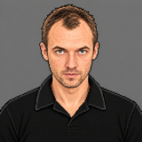

28 августа — 30 октября · сезон длится, пока играем на одном покрытии
| игрок | очки | за матч | |
|---|---|---|---|
| 1 | Михаил З | 201 | 1.79 |
| 2 | Артем Г | 169 | 1.71 |
| 3 | Никита Л | 132 | 1.53 |
| 4 |  Игорь Д | 146 | 1.47 |
| 5 | Виталий Г | 159 | 1.45 |
| 6 | Антон С | 120 | 1.43 |
| 7 | Артем Р | 119 | 1.40 |
| 8 | Константин К | 115 | 1.39 |
| 9 | Дмитрий З | 145 | 1.38 |
| 10 | Максим Ст | 116 | 1.33 |
| 11 | Максим Ск | 65 | 1.30 |
| 12 | Вячеслав З | 102 | 1.27 |
| 13 | Александр П | 76 | 1.27 |
| 14 | Алексей У | 88 | 1.22 |
| 15 | Евгений С | 100 | 1.19 |
| 16 | Михаил Г | 109 | 1.17 |
| Максим Р | 20 | 2.00 | |
| Даниэль Р | 32 | 1.52 | |
| Александр Ч | 33 | 1.50 | |
| Алексей А | 49 | 1.44 | |
| Александр М | 29 | 1.32 | |
| Сергей Б | 11 | 1.00 | |
| Вадим Ш | 29 | 0.97 | |
| Роман Ш | 9 | 0.90 | |
| Дмитрий Д | 26 | 0.67 |
очки команды в матчах, где человек был на поле: победа 3, ничья 1, в среднем 1.39 за матч. Команды делятся поровну по силе, поэтому сильному игроку достаются партнёры послабее, и в этой цифре много везения с составом. Место считается у тех, кто был хотя бы на половине пятниц, остальные серым
| игрок | участие | коэф. | |
|---|---|---|---|
| 1 | Максим Ск | 33 из 41 | 0.80 |
| 2 | Максим Ст | 50 из 84 | 0.60 |
| 3 | Никита Л | 49 из 89 | 0.55 |
| 4 | Евгений С | 33 из 72 | 0.46 |
| 5 | Александр П | 22 из 49 | 0.45 |
| 6 | Константин К | 26 из 74 | 0.35 |
| 7 | Дмитрий З | 34 из 97 | 0.35 |
| 8 | Виталий Г | 36 из 108 | 0.33 |
| 9 | Михаил З | 33 из 132 | 0.25 |
| 10 | Артем Р | 20 из 83 | 0.24 |
| 11 | Вячеслав З | 16 из 67 | 0.24 |
| 12 | Антон С | 19 из 83 | 0.23 |
| 13 | Артем Г | 18 из 106 | 0.17 |
| 14 | Алексей У | 7 из 59 | 0.12 |
| Сергей Б | 7 из 8 | 0.88 | |
| Александр М | 9 из 17 | 0.53 | |
| Алексей А | 17 из 34 | 0.50 | |
| Даниэль Р | 5 из 18 | 0.28 | |
| Дмитрий Д | 4 из 16 | 0.25 | |
| Александр Ч | 4 из 19 | 0.21 | |
| Вадим Ш | 2 из 18 | 0.11 | |
| Роман Ш | 0 из 6 | 0.00 |
доля голов команды, в которых человек забил или отдал голевую передачу, по матчам, где он был на поле. 0.50 значит участие в каждом втором голе своей команды, в среднем 0.37. Голы за другую команду сюда не идут. Очки команды и её сухие матчи в коэффициент не входят: у одного и того же полевого игрока они от одних пятниц к другим не повторяются, а доля в голах повторяется. За отдельный вечер коэффициент на странице вечера. Место у тех, кто был хотя бы на половине пятниц, остальные серым
доля матчей, где команда вратаря не пропустила. Место у тех, кто был хотя бы на половине пятниц, остальные серым
| игрок | очки | за матч | |
|---|---|---|---|
| 1 | Михаил З | 65 | 1.97 |
| 2 | Никита Л | 62 | 1.94 |
| 3 | Артем Г | 55 | 1.77 |
| 4 | Константин К | 34 | 1.62 |
| 5 | Максим Ск | 45 | 1.50 |
| 6 | Александр Ч | 33 | 1.50 |
| 7 | Игорь Д | 33 | 1.50 |
| 8 | Антон С | 42 | 1.40 |
| 9 | Виталий Г | 41 | 1.28 |
| 10 | Алексей У | 25 | 1.25 |
| 11 | Александр П | 26 | 1.24 |
| 12 | Артем Р | 22 | 1.16 |
| 13 | Михаил Г | 33 | 1.10 |
| 14 | Максим Ст | 34 | 1.10 |
| 15 | Евгений С | 18 | 0.90 |
| 16 | Вячеслав З | 15 | 0.83 |
| 17 | Дмитрий З | 22 | 0.81 |
| Максим Р | 20 | 2.00 | |
| Алексей А | 15 | 1.36 |
очки команды в матчах, где человек был на поле: победа 3, ничья 1, в среднем 1.39 за матч. Команды делятся поровну по силе, поэтому сильному игроку достаются партнёры послабее, и в этой цифре много везения с составом. Место считается у тех, кто был хотя бы на половине пятниц, остальные серым
| игрок | участие | коэф. | |
|---|---|---|---|
| 1 | Максим Ск | 22 из 27 | 0.81 |
| 2 | Никита Л | 21 из 37 | 0.57 |
| 3 | Александр П | 8 из 17 | 0.47 |
| 4 | Евгений С | 6 из 16 | 0.38 |
| 5 | Антон С | 10 из 28 | 0.36 |
| 6 | Виталий Г | 9 из 26 | 0.35 |
| 7 | Дмитрий З | 5 из 15 | 0.33 |
| 8 | Вячеслав З | 3 из 9 | 0.33 |
| 9 | Максим Ст | 7 из 23 | 0.30 |
| 10 | Алексей У | 4 из 15 | 0.27 |
| 11 | Константин К | 6 из 24 | 0.25 |
| 12 | Александр Ч | 4 из 19 | 0.21 |
| 13 | Михаил З | 8 из 40 | 0.20 |
| 14 | Артем Г | 3 из 34 | 0.09 |
| 15 | Артем Р | 0 из 12 | 0.00 |
| Алексей А | 4 из 9 | 0.44 |
доля голов команды, в которых человек забил или отдал голевую передачу, по матчам, где он был на поле. 0.50 значит участие в каждом втором голе своей команды, в среднем 0.33. Голы за другую команду сюда не идут. Очки команды и её сухие матчи в коэффициент не входят: у одного и того же полевого игрока они от одних пятниц к другим не повторяются, а доля в голах повторяется. За отдельный вечер коэффициент на странице вечера. Место у тех, кто был хотя бы на половине пятниц, остальные серым
доля матчей, где команда вратаря не пропустила. Место у тех, кто был хотя бы на половине пятниц, остальные серым
| игрок | очки | за матч | |
|---|---|---|---|
| 1 | Михаил З | 136 | 1.72 |
| 2 | Артем Г | 114 | 1.68 |
| 3 | Дмитрий З | 123 | 1.58 |
| 4 | Виталий Г | 118 | 1.51 |
| 5 | Артем Р | 97 | 1.47 |
| 6 | Игорь Д | 113 | 1.47 |
| 7 | Максим Ст | 82 | 1.46 |
| 8 | Антон С | 78 | 1.44 |
| 9 | Вячеслав З | 87 | 1.40 |
| 10 | Константин К | 81 | 1.31 |
| 11 | Никита Л | 70 | 1.30 |
| 12 | Александр П | 50 | 1.28 |
| 13 | Евгений С | 82 | 1.28 |
| 14 | Алексей У | 63 | 1.21 |
| 15 | Михаил Г | 76 | 1.21 |
| 16 | Дмитрий Д | 26 | 0.67 |
| Даниэль Р | 32 | 1.52 | |
| Алексей А | 34 | 1.48 | |
| Александр М | 29 | 1.32 | |
| Максим Ск | 20 | 1.00 | |
| Сергей Б | 11 | 1.00 | |
| Вадим Ш | 29 | 0.97 | |
| Роман Ш | 9 | 0.90 |
очки команды в матчах, где человек был на поле: победа 3, ничья 1, в среднем 1.38 за матч. Команды делятся поровну по силе, поэтому сильному игроку достаются партнёры послабее, и в этой цифре много везения с составом. Место считается у тех, кто был хотя бы на половине пятниц, остальные серым
| игрок | участие | коэф. | |
|---|---|---|---|
| 1 | Максим Ст | 43 из 61 | 0.70 |
| 2 | Никита Л | 28 из 52 | 0.54 |
| 3 | Евгений С | 27 из 56 | 0.48 |
| 4 | Александр П | 14 из 32 | 0.44 |
| 5 | Константин К | 20 из 50 | 0.40 |
| 6 | Дмитрий З | 29 из 82 | 0.35 |
| 7 | Виталий Г | 27 из 82 | 0.33 |
| 8 | Артем Р | 20 из 71 | 0.28 |
| 9 | Михаил З | 25 из 92 | 0.27 |
| 10 | Дмитрий Д | 4 из 16 | 0.25 |
| 11 | Вячеслав З | 13 из 58 | 0.22 |
| 12 | Артем Г | 15 из 72 | 0.21 |
| 13 | Антон С | 9 из 55 | 0.16 |
| 14 | Алексей У | 3 из 44 | 0.07 |
| Сергей Б | 7 из 8 | 0.88 | |
| Максим Ск | 11 из 14 | 0.79 | |
| Александр М | 9 из 17 | 0.53 | |
| Алексей А | 13 из 25 | 0.52 | |
| Даниэль Р | 5 из 18 | 0.28 | |
| Вадим Ш | 2 из 18 | 0.11 | |
| Роман Ш | 0 из 6 | 0.00 |
доля голов команды, в которых человек забил или отдал голевую передачу, по матчам, где он был на поле. 0.50 значит участие в каждом втором голе своей команды, в среднем 0.34. Голы за другую команду сюда не идут. Очки команды и её сухие матчи в коэффициент не входят: у одного и того же полевого игрока они от одних пятниц к другим не повторяются, а доля в голах повторяется. За отдельный вечер коэффициент на странице вечера. Место у тех, кто был хотя бы на половине пятниц, остальные серым
доля матчей, где команда вратаря не пропустила. Место у тех, кто был хотя бы на половине пятниц, остальные серым